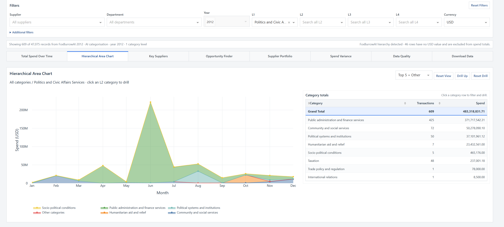

Dashboard 02
Hierarchical Area Chart
Drill from broad L1 categories through the detailed taxonomy by clicking either the chart or category-total table. The visible filters follow the drill path and can be stepped back or reset.
Open full-size screenshot ↗